Signature
Hummus au filet de viande
حمّص باللحمةFilet de viande mariné à nos épices maison, sur un lit de houmous crémeux, avec poivrons grillés et tomates.
Restaurant & café turc · Ennasr II
الشرق على طاولتك في تونس
Le grand petit-déjeuner oriental, le houmous, les pide sortis du four, les grillades et la künefe. En famille, sur notre terrasse, ou livré chez vous.
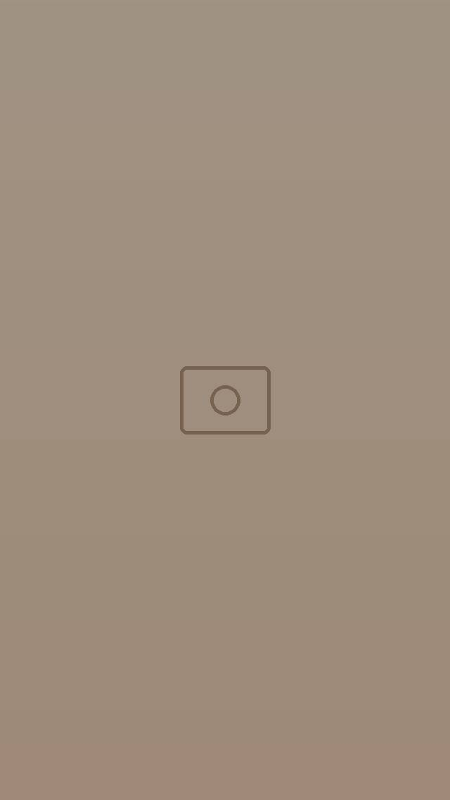
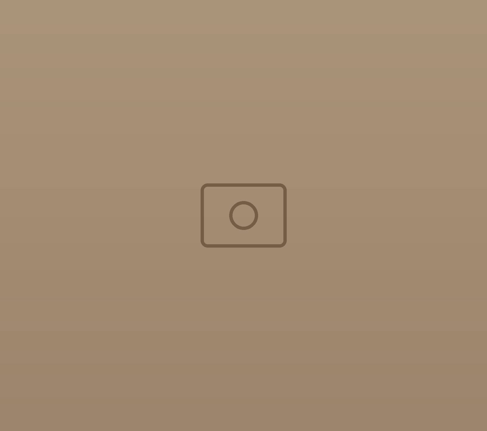
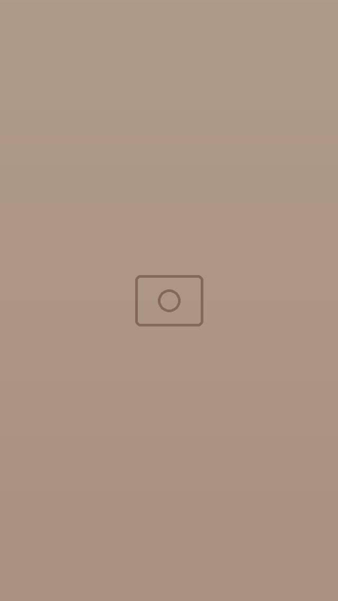
Petit-déjeuner oriental فطور شرقي
Un petit-déjeuner oriental aussi fin que copieux, fait avec de bons produits tunisiens. Seule difficulté : choisir par quoi commencer.
فطور شرقي يحلّي الويكند
Un petit-déjeuner oriental, et le week-end prend des airs de fête.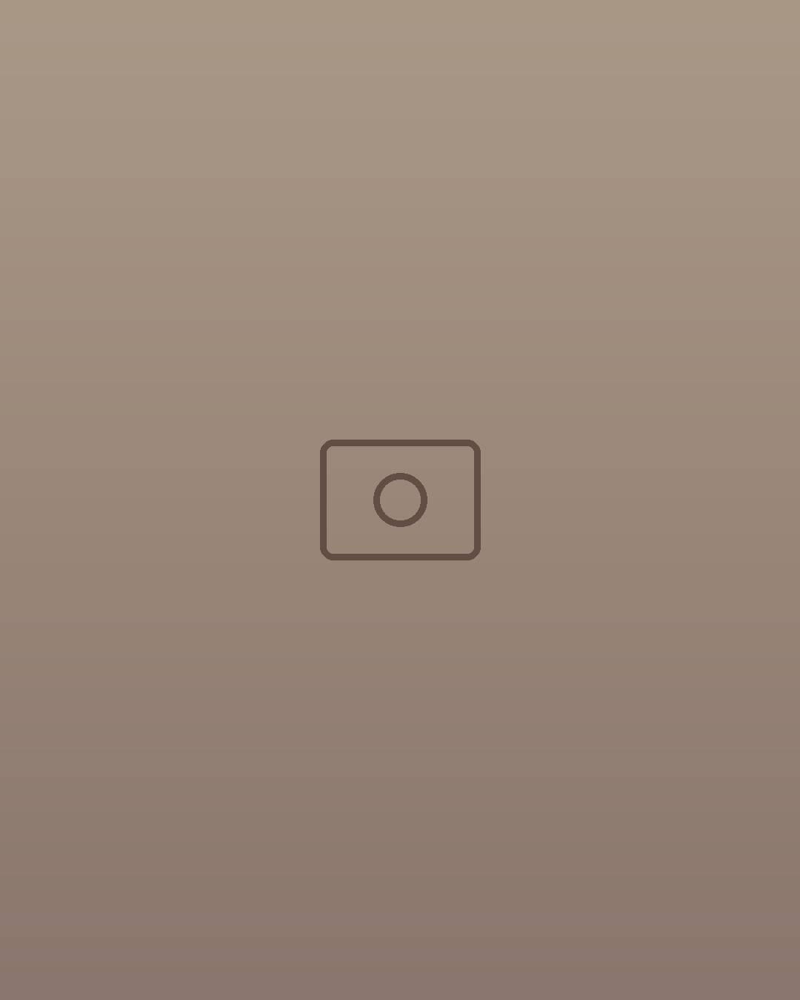
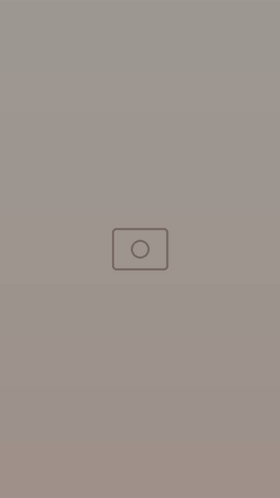
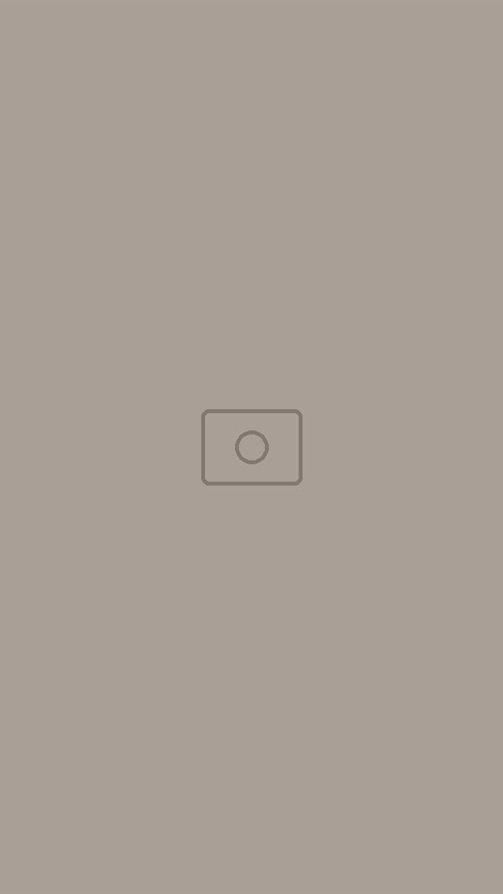
La carte أكل تركي
Une sélection de nos plats. La carte complète est disponible au restaurant.
Filet de viande mariné à nos épices maison, sur un lit de houmous crémeux, avec poivrons grillés et tomates.
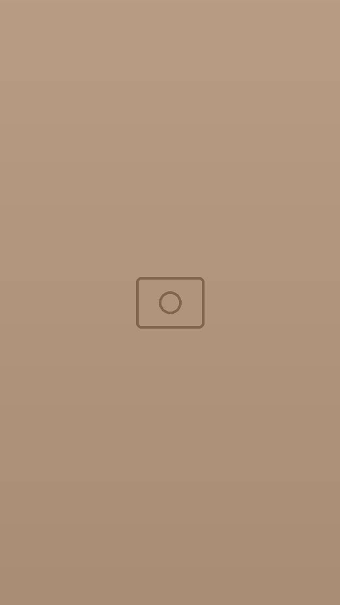
Crémeux, huile d’olive, paprika et dés de tomate.
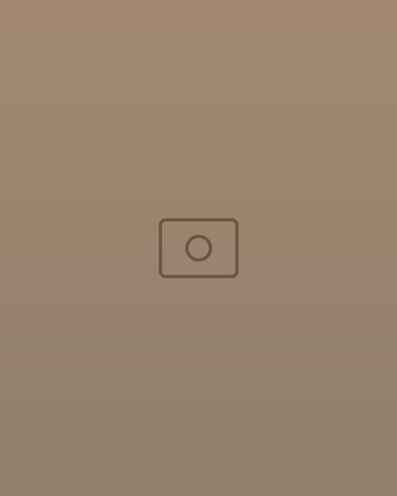
Le pain turc en barque, doré au four.
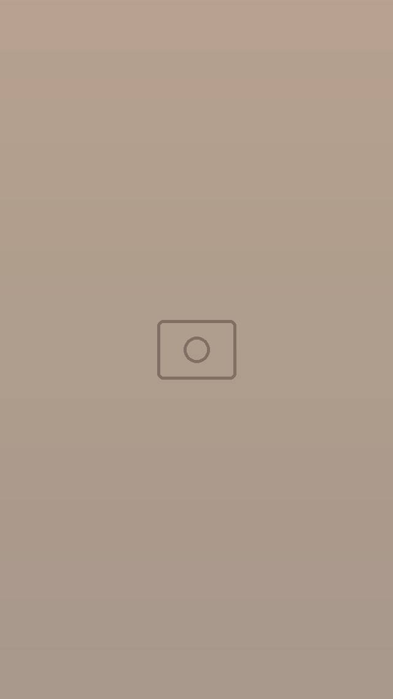
Brochettes et grands plateaux à partager.
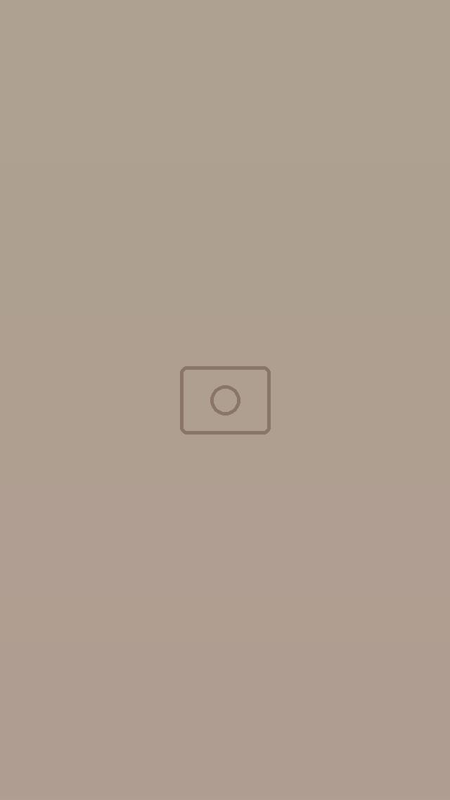
Le dessert turc aux pistaches, à partager, si vous y arrivez.
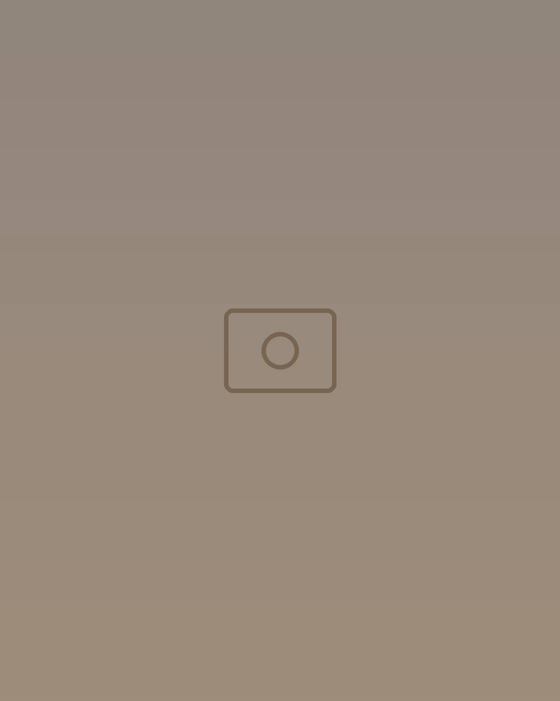
Chez nous للعائلة
De grandes tables à partager, une terrasse et des plats qui arrivent les uns après les autres : on vient à plusieurs, on reste longtemps.
Commande & livraison
Commandes et livraisons par téléphone.